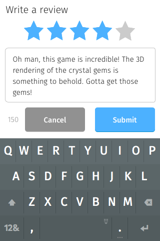
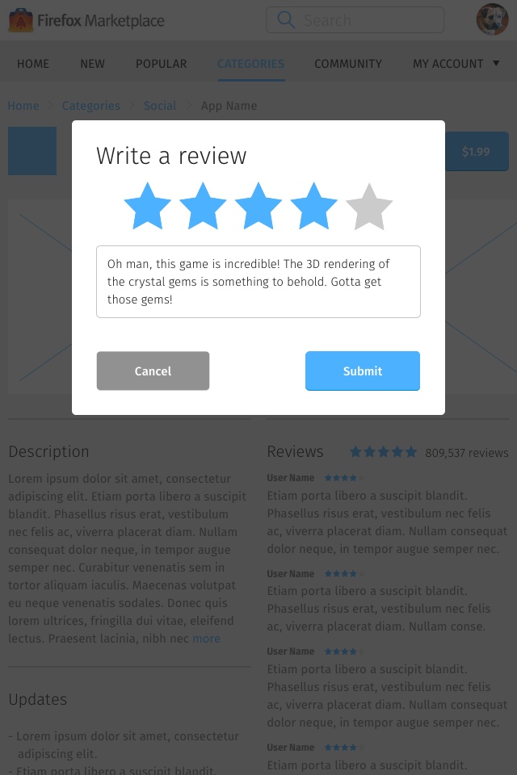
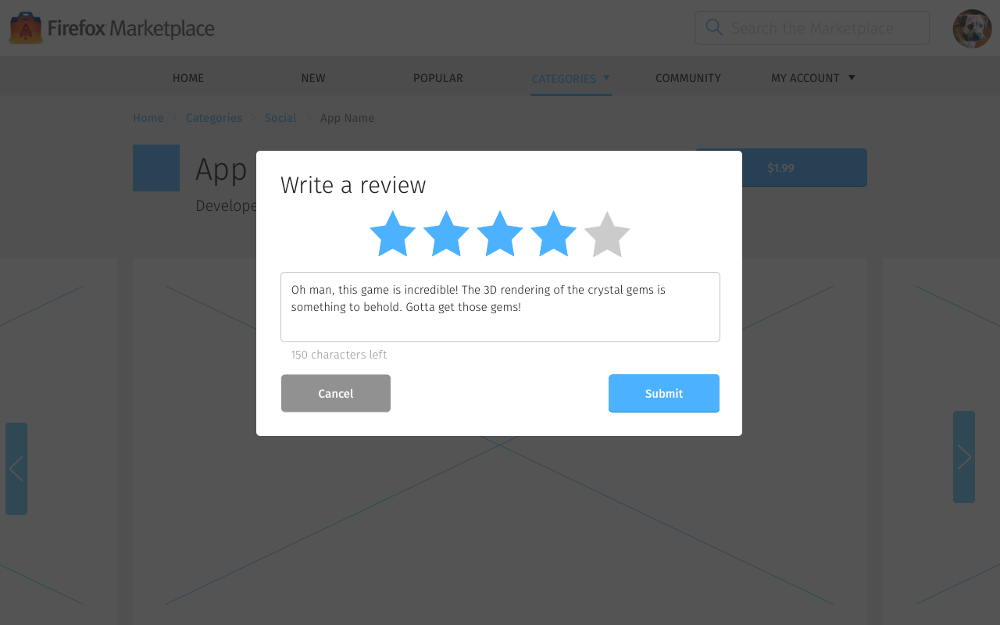

<div class="container">
	<div class="row">
		<div class="col-sm-12 col-md-12 col-lg-12">
			<h1>App Details &rarr; Write a Review</h1>
			
      <p class="longText">The write review interface is a modal window that provides a way to write and commit app reviews.</p>
      
      <p class="longText">To access this page, tap the Write a Review button on either the <a href="app-details-page.html">App Details</a> or the <a href="app-details-review-view.html">View All Reviews</a> pages.</p>
      
      
      
      
       
      
      
      <p class="longText">This interface contains:</p>
			
			<ol class="longText">
  			<li><strong>Star ratings</strong>: scales from 1–5 and are highlighted when selected or moused over.</li>
  			<li><strong>Review textbox</strong>: contains up to 150 characters.</li>
  			<li><strong>Character count</strong>: starts at 150 and counts down as the review textbox fills up.</li>
  			<li><strong>Cancel button</strong>: dismisses this modal window.</li>
  			<li><strong>Submit button</strong>: commit review using the values from star ratings and textbox, then dismisses this modal window. This button only appears after a star ratings has been selected and the review textbox contained a value.</li>
      </ol>

		</div>
	</div>
	<!-- Pagination. If you have more than one page, set the multipage variable in the Frontmatter to true. Editing the pagination code happens in /_includes/homePagination.html.
		NOTE: This is currently broken in the Jekyll ver of this template.
		-->
		{% if page.multipage %}
			{% include homePagination.html %}
		{% endif %}
